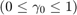
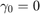
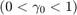
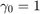
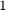

setEfieldparameter
Set the parameters of the electric fields of each pulse that remain constant through multiple simulations with multipulse sequences.
Contents
Syntax
- setdelayMaxs(amplitude,pulse_duration,central_frequency,gamma_0)
Description
- c.setEfieldparameter(amp,t_pulse,w0,gamma0) amp is the global electric field amplitude (in atomic units). t_pulse corresponds to the temporal full width at half maximum (FWHM) of each pulse. w0 is the central frequency of each pulse. The parameter for the rotating frame of each pulse can be chosen with gamma0.
Detailed Description and Examples
This command sets the amplitude, the temporal pulse duration, and the central frequency of each pulse of a multipulse sequence to constant values. All inputs must be passed as atomic units. Inputs can be given in other units such as femtoseconds if they are directly multiplied with their specific conversion factors from the System class. In addition to these parameters, the rotating frame gamma_0 of each pulse can also be chosen. Allowed values for gamma_0 are , where  corresponds to the full rotating frame,  to an intermediate regime (partially rotating frame), and  is the lab frame. Note that the parameter for the rotating frame must be chosen appropriately according the step size of the interpulse delays employed in the simulation in order to avoid aliasing artifacts. A value for gamma_0 close to  will necessitate a smaller sampling step size. The quantitative relation between rotating frame and sampling step sizes is dictated by the Nyquist sampling theorem.
Example
s = System; c = CMDS(s); amp = 5e-4; %amplitude is given directly in atomic units E0 = 2.0*s.evtoau; %central energy: 2 eV (and converted into atomic units) t_pulse = 20*s.fstoau; %temporal FWHM: 20 fs (and converted into atomic units) gamma0 = 0; %full rotating frame c.setEfieldparameter(amp,t_pulse,E0,gamma0); % All electric field parameters are now internally stored in atomic units.